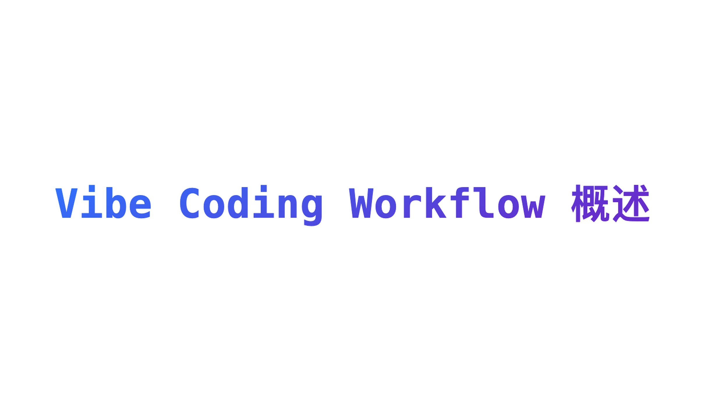

现状 · BEFORE
线上 #172 实际渲染首屏（桌面 ≥1024，正文栏宽 680px）
Vibe Coding Workflow 概述
①

②
壹 Vibe Coding Workflow 概述
④
在今年 4 月底我开始正式接触和使用 AI，最开始使用的 chatgpt 和 opus，使用的方式也很简单一问一答，跟 AI 一轮一轮地对话，让 AI 执行，然后人工介入验收代码和代码。
慢慢地我们开始发现，有点不太对劲。在团队开发的过程中，每一个人可能会遇到相同的需求，但是每一个的提示词不同，使用的大模型不同，使用的智能体不同，得出的结果差异性特别的大，所以迫切地需要一个统一的流程性的内容……
贰 工作流存在的意义?
不要让 AI 更快写代码，应该是让 AI 先明确边界。……
① 封面杂志卡（metadata.cover）——同一张文字标题卡；② 图内又印着一遍标题；③ PostHeader 真 h1 第三遍；④ 正文首段内嵌图原样再渲染一次（现行规范条款「正文首图不因封面展示被移除」）。
效果：图 ×2 · 标题文字 ×3 挤满首屏；目录「共 7 节」，第壹节被文档标题占位，正文六节从「贰」起跳。
效果：图 ×2 · 标题文字 ×3 挤满首屏；目录「共 7 节」，第壹节被文档标题占位，正文六节从「贰」起跳。
方案 A · AFTER
渲染层导语区去重（同一份 md、同一套 chrome，仅正文 html 收编）
Vibe Coding Workflow 概述
✓
在今年 4 月底我开始正式接触和使用 AI，最开始使用的 chatgpt 和 opus，使用的方式也很简单一问一答，跟 AI 一轮一轮地对话，让 AI 执行，然后人工介入验收代码和代码。
慢慢地我们开始发现，有点不太对劲。在团队开发的过程中，每一个人可能会遇到相同的需求，但是每一个的提示词不同，使用的大模型不同，使用的智能体不同，得出的结果差异性特别的大，所以迫切地需要一个统一的流程性的内容……
壹 工作流存在的意义?
不要让 AI 更快写代码，应该是让 AI 先明确边界。如果我们是做的团队使用的工作流，那么还需要赋予更多的限制条件，需要明确的是以下两点：
贰 启发式探索
启发式探索，先回答三个问题。……
封面 ×1（杂志卡，承载图）、标题 ×1（PostHeader 唯一 h1）、首屏直达正文导语（首字下沉恢复在真正的导语段上）。
目录「共 6 节」，编号从壹顺排到陆；正文中途的同 URL 配图、与标题不同的首行标题均不受影响（见下方规则卡）。
目录「共 6 节」，编号从壹顺排到陆；正文中途的同 URL 配图、与标题不同的首行标题均不受影响（见下方规则卡）。